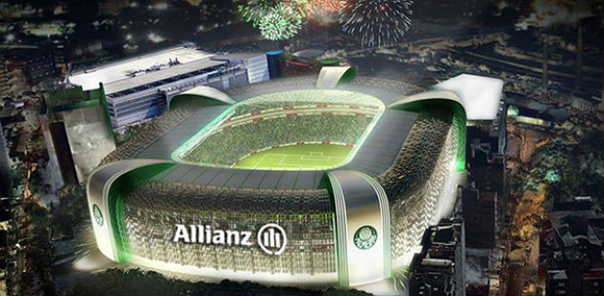
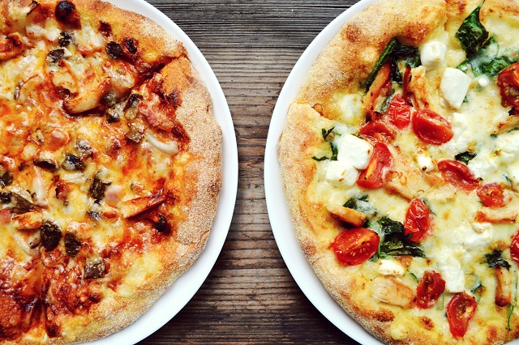
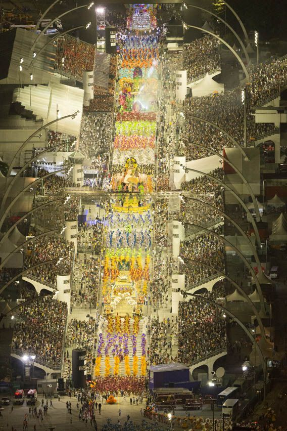

São Paulo is one of the 27 federative units of Brazil, it is located in the Southeast Region, according to the IBGE, in 2015, São Paulo had the highest GDP among all Brazilian states. The GDP of São Paulo is equivalent to the sum of the economies of Argentina, Uruguay, Paraguay and Bolivia. If it were a sovereign country, its nominal GDP could rank among the top 20 in the world (2010 estimate)

Curiosities

Porko's Home
Modern and imposing, Allianz Parque is the main multipurpose arena in Latin America. Located in the heart of São Paulo, on the same ground that for more than 100 years housed the Antarctica Park and, later, the Palestra Italia Stadium, the home of Palmeiras was reopened in 2014 as a landmark of the club's centenary and today it is one of the great proud of the alviverde fans.

Pizza
The city of São Paulo is the second city that consumes most pizza in the world, behind only New York, there is nothing more paulistano than ordering a pizza. The preference of São Paulo residents is reflected in the numbers. Of the 30,000 pizzerias in Brazil, 5,500 are in the city of São Paulo, according to the Associação das Pizzerias Unidas.

Sambodromo of São Paulo
The Carnival of São Paulo concerns a momo party held in the city of São Paulo, in the homonymous Brazilian state. It consists of the samba schools' parade at the Anhembi sambodromo, dances in clubs and street blocks. Currently, it is considered one of the biggest and most important popular events in Brazil.